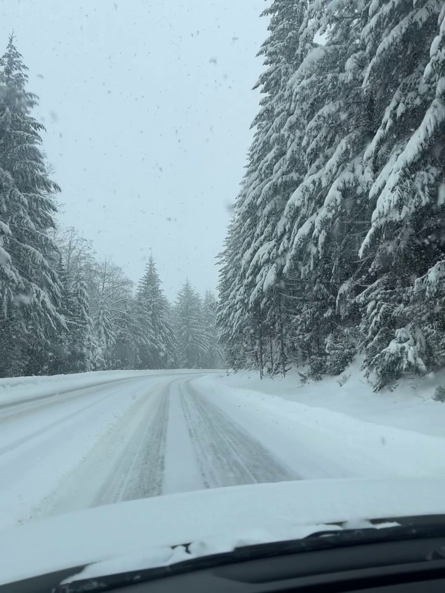

SANKIT산킷
KIT 069
숫자 세 개만 외우세요
8~9 → 3 → 1.6
새 타이어8 ~ 9 mm 컨티넨탈 기준, 평균 트레드 깊이
교체를 생각할 때3 mm 한국타이어 — "여유를 두고 고려"
마모 한계1.6 mm "이하인 타이어는 사용해서는 안 된다"
1.6mm는 합격선이 아니라 탈락선입니다. 거기 닿으면 이미 늦은 것이고,
눈길이라면 더 그렇습니다. 한국타이어는 매월 1회 타이어를 전반적으로
점검하라고 권합니다. 이번 주말 가신다면, 이번 주가 그 1회입니다.
SANKIT산킷
KIT 069
한국교통안전공단 실험 · 시속 60km
빙판에선 승용차도
4.9배를 더 갑니다
빙판길 제동거리 (마른 노면 대비)승용차 4.9배 화물차는 7.5배
한국도로공사 권고 감속평소보다 20 ~ 50 % 비 · 눈이 올 때
같은 60km/h인데 멈추는 거리가 다섯 배가 됩니다. 속도를 줄이는 것 말고는
줄일 방법이 없습니다.
한국도로공사는 제설 작업을 끝낸 도로에서도 눈이 왔던 길은 제동거리가
늘어날 수 있다고 말합니다. 깨끗해 보여도 마찬가지라는 뜻입니다.
SANKIT산킷
KIT 069
트렁크에 넣어만 두면 소용없습니다
등판 · 제동 · 코너링,
셋 다 달랐습니다
한국도로공사가 월동장구를 걸고 실험했습니다. 윈터 타이어나 우레탄
체인을 단 차가 일반 타이어 차보다 올라가고, 서고, 도는 것 모두
나았습니다. 하나만 나은 게 아니라 셋 다였습니다.
체인은 사 두는 것과 끼울 줄 아는 것이 다릅니다. 눈 오는 갓길에서
처음 꺼내 보지 마세요. 집 앞에서 한 번 끼워 보는 데 10분이면 됩니다.
차간거리도 평소보다 넓게. 앞차가 미끄러지는 걸 보고 나서 밟으면,
그때는 이미 4.9배 안에 들어와 있습니다.

SANKIT산킷
오늘 저녁에
5분이면
끝납니다
산킷 한 줄 — 홈 깊이 보고, 공기압 맞추고, 체인 한 번 끼워 보기.
주말에 같이 가는 운전자에게 이 글을 보내 주세요. 잔소리보다 숫자가 빠릅니다.
출발 전에는 기상 특보와 리조트 도로 통제 공지를 꼭 확인하시고요.
ⓒ SANKIT